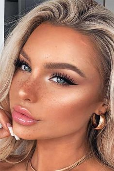
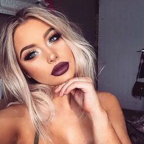
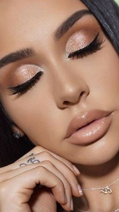
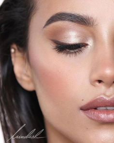
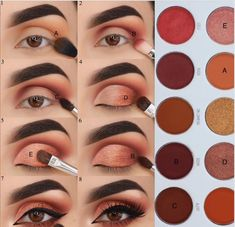
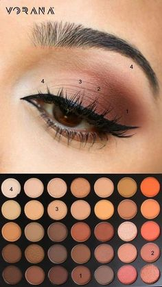
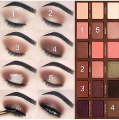
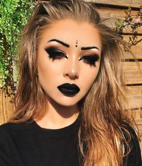
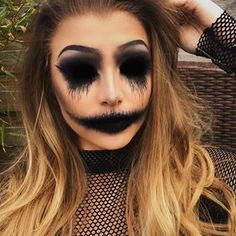
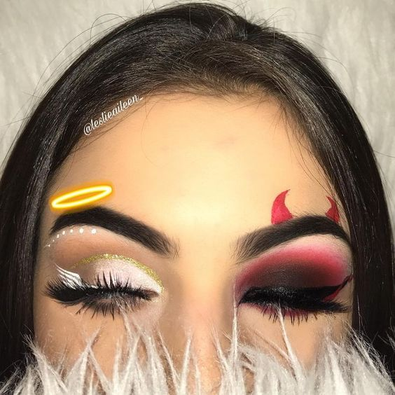

и разбавить подборку кое чем необычным
Самый универсальный дневной макияж

Любой макияж начинай с бальзама для губ. Когда придет черед помады (как правило, в самом конце), они станут мягкими и их будет легче накрасить.
В этом сезоне макияжу свойственно цветовое многообразие. Самые модные цвета в макияже: алый, кораловый, изумрудный, а также розовые и бежевые натуральные оттенки.

Не получается сделать ровно яркий контур губ? Нанеси помаду, не доходя до контура, а потом карандашом «растяни» текстуру помады до желаемой формы. Кстати, карандаш не должен быть острым! Слегка затупи грифель об руку или салфетку.
Смотри, какие они красивые


Умеешь рисовать идеальные стрелки?
Кстати, многие девушки неправильно красят ресницы. Двигай щеточку зигзагом вверх от самых корней к кончикам. Этот простой прием помогает визуально распахнуть глаза. А еще так можно придать им миндалевидную форму — только двигать щеточку нужно не строго вверх, а в сторону внешнего уголка глаза.
Не пытайся нанести подводку с помощью одной линии, так ты точно не получишь аккуратную стрелку. Лучше наноси ее секторами: сначала во внешние уголки глаз, а затем двигайся к внутренним, или можешь остановиться на средине линии роста ресниц (в зависимости от формы глаз).

Нанесение макияжа стало уже обычным занятием для большинства женщин. Но чаще всего мы, выбрав один какой-то стиль мейкапа, используем его изо дня в день. Хотя техник макияжа и косметических средств очень много, так много, что иногда можно даже запутаться. Мы выбрали для тебя 10 лучших советов визажистов, которые помогут облегчить тебе бьюти-рутину.
Визуально увеличить глаза поможет коррекция их формы. Для этого тебе стоит наложить на все подвижное веко тени светлого цвета, в складку века нанести тени на 2-3 оттенка темнее основного тона, под бровь стоит нанести светлые тени или бежевый консилер. Затем необходимо нанести светоотражающие тени во внутренние уголки глаз, а во внешние — тени более темного оттенка. Завивание ресниц и использование объемной туши также способно заставить твои глаза казаться больше и выразительнее.
Самый хороший макияж могут испортить темные круги под глазами, поэтому от них стоит избавляться. Правильная техника маскировки этой зоны называется Голливудская "V". С помощью кисти для консилера, нанеси средство под глаза в форме буквы "V": от внешнего к внутреннему углу глаз. Затем похлопывающими движениями растушуй консилер, пока ты не дойдешь до центра нижнего века, где нужно растушевать сильнее, чтобы не было видно границы между корректором и тональным средством.


Ключом к хорошему макияжу является осознание того, что твоя кожа неидеальна. Как только ты объективно посмотришь на свои недостатки, ты сможешь, если не избавиться, то скрыть их. Помни правило — противоположные цвета уравновешивают друг друга. Для того, чтобы убрать покраснения, используй консилер зеленого или желтого оттенка, оранжево-лососевый оттенок помогает избавиться от синяков и темных кругов под глазами.
Большинство визажистов придерживаются мнения, что инструменты для нанесения макияжа не менее важны, чем косметика. Просто за счет улучшения качества твоих кистей макияж заметно улучшится. Это не значит, что тебе стоит скупить все кисти, которые ты сможешь найти. Но для хорошего мейкапа тебе понадобятся:
мы ведь обещали
Самые смелые готовы носить такой мейкап не только на хеллоуин



В качестве основы для макияжа глаз можно использовать светлые тени. Наноси их на все веко, а поверх — выбранный цвет. Тени будут держаться дольше. Если переборщила с пудрой, используй термальную воду. Сбрызни лицо, держа флакон на расстоянии вытянутой руки. Кожа будет выглядеть натурально.
Если вы не умеете ровно наносить жидкую подводку, то лучше ей совсем не пользоваться. В качестве альтернативы можно посоветовать проводить линию черными тенями при помощи специальной скошенной кисточки для подводки.
Все права защищены